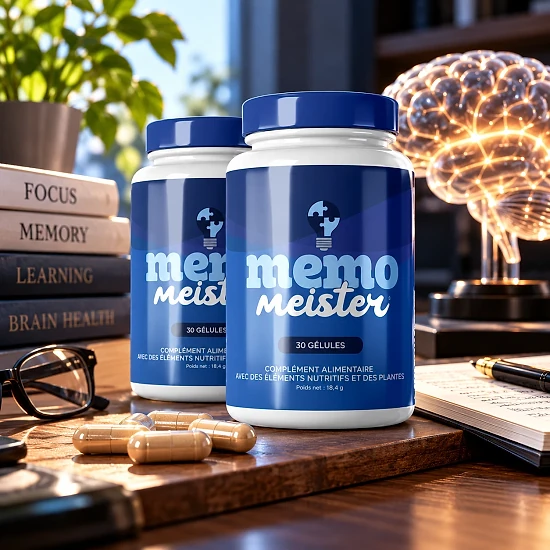

Qu’est-ce que Memo Meister et comment agit-il ?
Présenté comme un nootropique d’origine naturelle, Memo Meister est un complément vendu sous forme de gélules. Il vise à accompagner la concentration, la mémoire et la vivacité d’esprit jour après jour. Les personnes visées sont des adultes qui veulent soutenir leur attention au travail comme dans leurs études.
D’après l’étiquette, c’est un complément qui combine éléments nutritifs et plantes. Les 30 gélules du flacon correspondent à un mois d’utilisation.
La formule repose sur huit ingrédients principaux : vitamine B3, zinc, L-citrulline, L-carnitine, écorce de pin, maca, raisin et safran. Selon la marque, chaque composant a été choisi et dosé pour être bien absorbé. Aucun additif artificiel ni produit chimique nocif n’entre dans la formule, selon la marque. Le fabricant présente la formule comme adaptée à un usage continu, sans dépendance, dans une routine du quotidien.
L’action annoncée repose d’abord sur le zinc, utile à la fonction cognitive, et sur la vitamine B3, liée au métabolisme énergétique. La niacine contribue en outre à réduire la fatigue, selon le flacon. L’écorce de pin et le raisin apportent des polyphénols, et la maca est une plante traditionnelle des Andes.
D’après la marque, les premiers changements arrivent après deux ou trois semaines, avec une cure recommandée d’au moins 90 jours.
Le produit est fabriqué aux États-Unis, et sa distribution européenne revient à Digistore24 MSLW Limited, à Dublin. On lit un poids net de 25,52 g sur l’étiquette. La composition, l’utilisation conseillée et les avertissements sont imprimés en français sur le flacon.
Précisons que Memo Meister n’est pas un médicament et ne traite aucune maladie. Le site précise que ses allégations n’ont pas été évaluées par l’EFSA, et les résultats varient d’une personne à l’autre.
Memo Meister – Ingrédients
Voici, d’après le flacon, ce que contient une gélule de Memo Meister :
Vitamine B3 (20 mg) : aide au métabolisme énergétique et à diminuer la fatigue.
11 mg de zinc : sous forme d’oxyde, pour une fonction cognitive normale.
L-carnitine et L-citrulline (150 mg chacune) : impliquées dans le métabolisme.
Écorce de Pinus pinaster (100 mg) : riche en composés antioxydants.
Extrait de racine de maca (50 mg) : plante traditionnelle des Andes.
Raisin, 15 mg, et safran, 5 mg : des polyphénols et une épice précieuse.
On remarque aussi la Mucuna pruriens dans la liste des ingrédients, sans dose indiquée. On trouve enfin une gélule en hypromellose, de la cellulose et des agents anti-agglomérants.
Grâce aux doses par gélule, on peut comparer facilement avec d’autres produits. La caféine est absente de la liste des ingrédients. La maca et le safran sont des ingrédients connus de longue date dans leurs traditions respectives. À eux deux, la L-citrulline et la L-carnitine pèsent 300 mg par gélule, soit l’essentiel de la formule.
Memo Meister – Effets secondaires
Selon le site, Memo Meister est généralement bien toléré, ses ingrédients étant d’origine naturelle. Quand ils existent, les effets sont décrits comme légers, par exemple un léger inconfort digestif en début de cure.
L’étiquette le réserve aux adultes et l’exclut pendant la grossesse ou l’allaitement. L’étiquette demande l’avis d’un médecin pour toute personne sous traitement ou suivie médicalement.
La FAQ du site cite en particulier les traitements contre le diabète, l’hypertension ou les anticoagulants. Un intervalle d’au moins deux heures avec les autres médicaments est conseillé.
Respectez la dose et écartez tout flacon dont le sceau de sécurité manque. En cas d’effet inattendu, suspendez la prise et consultez, en apportant le flacon. La sensibilité est propre à chacun, et un conseil médical permet d’y voir clair. La FAQ ajoute une mise en garde pour les problèmes médicaux sévères non suivis. Lire l’étiquette entière avant la première gélule permet de vérifier qu’aucun ingrédient ne pose problème, par exemple en cas d’allergie. Il s’agit de consignes habituelles pour un complément de vitamines, minéraux et plantes. Il est précisé sur le site que ni l’EFSA ni la FDA n’ont évalué ses allégations, ce qui incite à la prudence. Présenter l’étiquette à un pharmacien facilite la vérification de la formule complète.
Memo Meister – Posologie
Les adultes prennent une gélule par jour, comme l’indique le flacon. La FAQ suggère une prise une demi-heure avant le repas principal, avec de l’eau.
Un flacon de 30 gélules couvre donc un mois. Il suffit d’avaler la gélule entière avec de l’eau. On trouve sur le site une mention de deux gélules, mais l’étiquette, elle, en indique une seule.
La régularité est la clé, d’après le site, qui parle de premiers ressentis en deux à trois semaines. Le site parle d’effets plus clairs entre la quatrième et la sixième semaine, et conseille au moins 90 jours.
Associer la cure à une alimentation équilibrée et à de l’activité physique est recommandé. L’étiquette rappelle qu’un complément ne remplace pas une alimentation variée ni un mode de vie sain. Un oubli ne se rattrape pas en doublant la dose ; on continue avec une gélule. Il peut être utile de noter le jour où vous commencez, afin de savoir quand le flacon se termine.
Une gélule par jour, pas plus, et un stockage au frais et au sec sous 30 °C. Placez-le hors de portée des enfants et contrôlez la date sous le flacon.
Memo Meister – Remboursement
Pour Memo Meister, le fabricant offre une garantie de 60 jours en cas d’insatisfaction. Si le produit ne vous convient pas, vous pouvez demander le remboursement intégral du montant de votre achat, selon les conditions publiées.
Conditions : 60 jours après l’achat, et tous les flacons doivent être renvoyés, entamés ou non. C’est la date d’achat qui fait partir le délai.
D’abord : envoyez un message à support@centralmeister.com, puis expédiez le colis sans attendre. N’oubliez pas votre nom, votre adresse et vos coordonnées dans le message.
Deuxième démarche : le renvoi se fait vers Moordrecht, aux Pays-Bas, avec un suivi obligatoire. Les retours sans numéro de suivi ne sont pas traités. Gardez l’e-mail de confirmation, utile pour justifier la date d’achat. Garder ces preuves évite les échanges inutiles avec le support.
Pour finir : une fois le retour vérifié, vous recevez un e-mail d’acceptation ou de refus. Une fois approuvé, le montant revient en 5 à 10 jours ouvrables. Une question sur la procédure ? Le support répond par e-mail. La marque rappelle enfin que les remboursements sont toujours effectués via le moyen de paiement utilisé lors de l’achat.
Pour l’assistance, le flacon mentionne aussi helpdesk@digistore24.ie ; toutes les conditions sont sur le site officiel. Une lecture attentive est conseillée avant la commande.
Memo Meister – Avis clients
-
Marie Dubois — Paris, FranceAchat vérifié – 6 flacons
« Incroyable ! Mon énergie mentale a triplé en 3 mois avec Memo Meister. Je me sens à nouveau moi-même et je peux beaucoup mieux me concentrer. Un produit qui fonctionne vraiment ! »
-
Anne Petit — Marseille, FranceAchat vérifié – 6 flacons
« Après la ménopause, je pensais ne jamais retrouver ma vivacité mentale. Memo Meister a prouvé que j’avais tort ! Je me sens à nouveau énergique et mentalement claire à 52 ans. »
-
Richard Laurent — Bordeaux, FranceAchat vérifié – 6 flacons
« Je travaille comme coach personnel et j’ai toujours testé des produits. Memo Meister est différent ! Je ressens plus de concentration pendant l’entraînement et plus d’énergie. Une très bonne expérience que je partage avec les autres ! »
Memo Meister – Où l’acheter ?
Memo Meister est vendu sur get-meister.com, son site officiel, via la plateforme Digistore24. Le produit n’est pas présent sur Amazon ni dans les chaînes de magasins, selon la marque.
Les flacons de vendeurs non officiels ne permettent aucune vérification de leur provenance. C’est un vrai enjeu de qualité et de sécurité, et un tel achat pourrait ne pas être couvert par la garantie de 60 jours.
C’est pourquoi la plupart des acheteurs passent par le site officiel, gage d’un produit authentique, du support et de la garantie. Selon la page de commande, l’achat se règle en une fois. En cas de question, il suffit d’écrire à support@centralmeister.com. On peut lire toute l’étiquette sur le site officiel avant de passer commande. C’est aussi la garantie d’un flacon conforme à l’étiquette et d’un support réactif. Prendre le temps de vérifier la source avant de commander évite bien des déceptions avec ce type de produit.
Avant de valider, vérifiez que vous êtes sur le site officiel de Memo Meister, afin d’écarter les imitations.
Pour être sûr d’obtenir le produit authentique, la plupart des utilisateurs choisissent de passer par le site officiel.
Memo Meister est-il une arnaque ?
Rien n’indique que Memo Meister soit une arnaque, au vu de l’étiquette et du site. Le produit est authentique, vendu par Digistore24, avec pour objectif la concentration et la vitalité mentale.
Le tableau nutritionnel donne la dose précise des huit actifs. Le zinc et la vitamine B3 sont présentés avec des allégations reconnues.
Le flacon mentionne aussi le distributeur, Digistore24 MSLW Limited à Dublin, une adresse d’assistance et, sur le site, une adresse de retour aux Pays-Bas. Cela ne prouve pas l’efficacité, mais confirme que les intervenants sont identifiables.
La page de commande joue sur l’urgence, avec un minuteur et des alertes de rareté. La page de vente va bien au-delà de l’étiquette, avec des promesses sur l’appétit et le cœur, à prendre avec recul.
La garantie satisfait ou remboursé de 60 jours est accompagnée d’une procédure claire. Il n’y a pas de résultat garanti, et un suivi médical reste irremplaçable. Garder des attentes réalistes reste la meilleure approche avec ce type de produit. Le produit se juge sur la durée conseillée, pas sur quelques jours d’essai.
Memo Meister peut convenir aux adultes qui veulent accompagner leur clarté mentale, en passant par le site officiel et en consultant si besoin.
Pour vérifier les détails du produit ou sa disponibilité actuelle, le site officiel de Memo Meister reste l’option la plus sûre.

Vérifier la disponibilité sur le site officiel